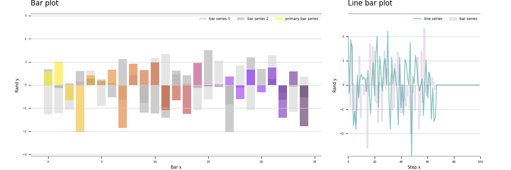
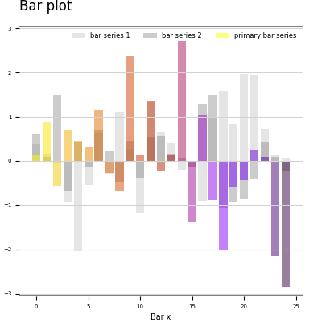
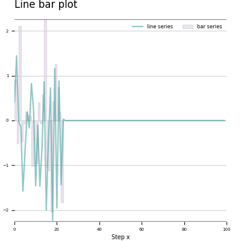
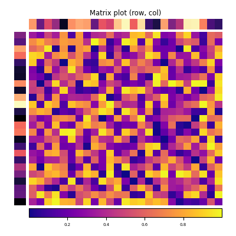
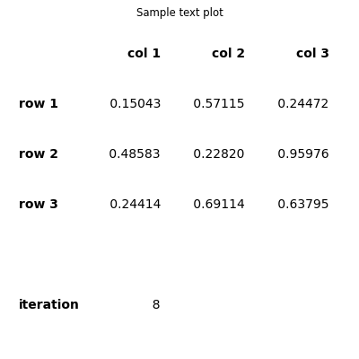

Getting Started¶
Before using this framework, it is strongly suggested that you start by familiarizing yourself with Matplotlib’s pyplot interface using the following Matplotlib tutorial.
For ease of use, it is recommended that you setup a virtual environment to install and run this framework.
If you haven’t worked with virtual envionrmnets before, you may use a platform like Anaconda or Miniconda
Installation¶
Use the included requirements.txt to install all required dependencies:
pip install -r requirements.txt
Alternatively, if you want to run just the base subnet_plot module, you may be able to simply install Matplotlib:
pip install Matplotlib
Once you have installed the dependencies you can run some sample animations by calling subnet_plot. See Examples for more details.
Subplot Components¶
A small selection of custom components are included to serve as an example of how to implement Matplotlib objects into this framework. See below for a brief description of each class along with links to the relevant Matplotlib documentation.
Above, a simple combined bar and line plot from display_sample_plots().
Bar subplot¶
The bar subplot displays primary elements using the supplied colormap while displaying the optional secondary elements in grayscale.
The SubplotBar component is based on the Matplotlib bar object.
Line subplot¶
The line subplot combines the basic line and bar plots. The optional bar data source is rendered behind the primary line data.
The SubplotLine component is based on the Matplotlib plot object.
Matrix subplot¶
The matrix subplot renders a 2-dimensional array in sequential steps with optional 1-dimensional arrays affixed to the left and top sides of the central matrix.
The SubplotMatrix component is based on the Matplotlib image object. Also see imshow.
Text subplot¶
The text subplot displays data using a text-based readout. The primary data source is rendered within a table, while a secondary data source is displayed in rows below the primary table.
The SubplotText component is based on the Matplotlib table object.